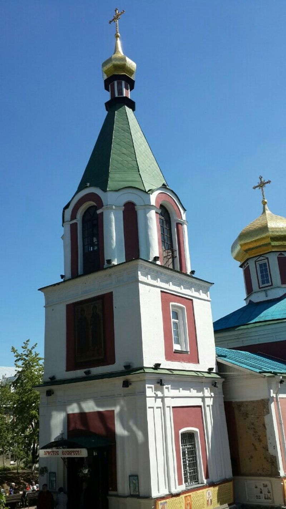

| Главная | Софийский собор | Озеро Нарочь | Борисоглебская церковь | Брестская крепость | Мирский замок | Беловежская пуща | Несвижский замок |
|---|
Борисоглебская церковь в Вышгороде — первая церковь, посвящённая святым Борису и Глебу[1]. Построена при великом князе Ярославе Мудром на месте сгоревшей церкви Святого Василия, возле которой были погребены тела братьев. После пожара 1020 года, уничтожившего церковь Святого Василия, были открыты погребённые рядом с ней тела братьев. Приписываемые им чудеса послужили причиной постройки небольшой клети (часовни), а затем Ярослав повелел выстроить церковь «велику… имеющю верхов 5». Митрополит Макарий (Булгаков) относит постройку первой деревянной Борисоглебской церкви к 1021 году и связывает с перенесением в неё тел Бориса и Глеба начало церковного почитания братьев[2]. На месте обветшавшего деревянного храма князь Изяслав Ярославич построил одноглавую каменную церковь, которую освятили 20 мая 1072 года при участии киевского митрополита Георгия, ряда других архиереев и киевского монашества и торжественно внесли в неё мощи братьев[3]. Большой каменный храм в честь Бориса и Глеба начал строить князь Святослав Ярославич (к его смерти в 1076 году была завершена кладка стен) и продолжил Всеволод Ярославич. К 1080—1090 годам храм был построен, но его верх обрушился и был восстановлен князем Олегом Святославичем. Церковь освятили 1 мая 1115 года в присутствии великого князя Владимира Мономаха. С этого времени она неоднократно упоминается в летописях до периода монголо-татарского нашествия когда сведения о ней исчезают.